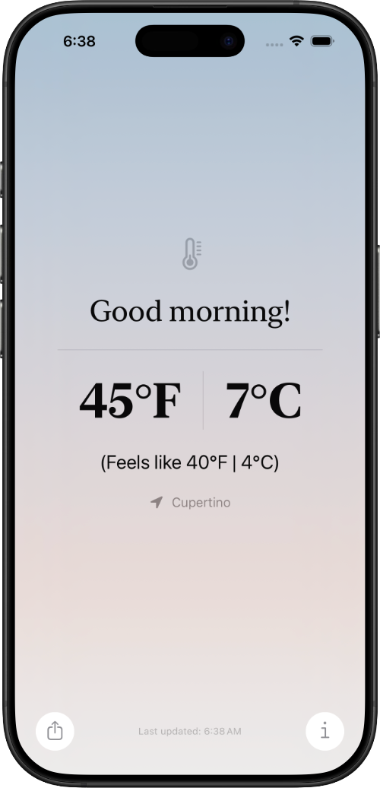

Live Temperature in F and C
See Fahrenheit and Celsius side by side at all times, including feels-like values.
Now available from Fruit Stand Software
A weather app built around one clear idea: temperature should be instantly readable in both Fahrenheit and Celsius. 40 Below uses your current location, shows what it feels like, and keeps the interface calm and fast.

Fruit Stand Software
Fruit Stand Software builds focused tools with tight UX and practical purpose. 40 Below is our flagship app: a modern weather experience with dual-unit clarity, dynamic color systems, and thoughtful privacy controls.
What 40 Below does
See Fahrenheit and Celsius side by side at all times, including feels-like values.
On iOS, swipe up to reveal the next 10 hours with temperature and feels-like context.
Uses your current location to show local conditions, with clear permission handling.
Background palettes adapt to time of day and temperature range for immediate visual mood.
Feature set
Platform support
Built with SwiftUI for iPhone, iPad, Mac, and Apple Vision platform targets.
Widget families are included for iOS, macOS, watchOS, and visionOS contexts.
Powered by Apple Weather, with source attribution shown in-app.
Contact
Reach out for support, press, or partnership inquiries.